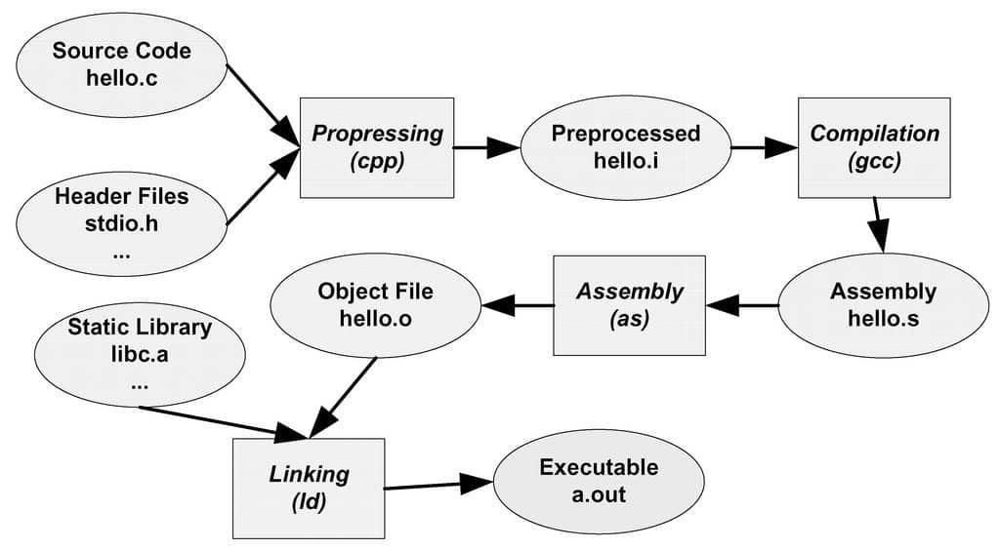

CPP基础
名字（name，变量、函数、类等）拥有两种属性：
- storage duration，简称duration，约等于一个名字的生命周期（lifetime），表明了它何时创建，何时销毁
- linkage，表明了该名字的链接属性。Internal linkage只有单文件可见，external linkage是所有文件可见。一言蔽之，就是名字暴露给链接器的可见性。
Storage class specifiers 用于修饰一个名字，控制上面两种独立属性的变化。
Storage duration有以下几种：
- automatic storage duration: 局部变量（名字），始于代码段开始，销毁于代码段结束。
- static storage duration: 静态变量，始于程序开始执行，终于程序结束运行。
- thread storage duration: 线程独占，thread local，随线程开始和销毁。
- dynamic storage duration: 开始和销毁由用户自己申请。
Linkage表示一个名字是否具有linkage. 如果一个名字有linkage，当这个名字出现在其他作用域时，它们指的是同一个东西。如果一个变量，函数或其他名字，在多处声明，但它们没有linkage，那么它们指的不是一个东西，将会生成多个实例。
Linkage有以下几种：
- no linkage: 变量（名字）只能在当前作用域使用。
- internal linkage: 变量（名字）可以在当前编译单元的所有作用域使用。
- external linkage: 变量（名字）可以在其他编译单元的某些作用域中使用。Variables and functions with external linkage also have language linkage, which makes it possible to link translation units written in different programming languages.
Summary: Scope determines where a variable is accessible. Duration determines where a variable is created and destroyed. Linkage determines whether the variable can be exported to another file or not.
分离编译
a.c中定义了一个变量a要在b.c中使用，正确的做法：（b.c中的extern是变量前置声明的格式1，并非修饰符，表示该变量定义在某处）
// a.c
int a = 3;
// b.c
#include <stdio.h>
extern int a;
int main()
{
printf("a=%d\n", a);
return 0;
}$ g++ a.c b.c
a=3b.c中去掉extern关键字，编译器会认为这是定义一个整形变量a2，因此会报重复定义的错误。
// a.c
int a = 3;
// b.c
#include <stdio.h>
int a;
int main()
{
printf("a=%d\n", a);
return 0;
}$ g++ a.c b.c
/usr/bin/ld: /tmp/cc6qujc6.o:(.bss+0x0): multiple definition of `a'; /tmp/ccp6J7M6.o:(.data+0x0): first defined here
collect2: error: ld returned 1 exit statusATTENTION
这里如果用
gcc编译，是可以链接通过的。
An identifier’s linkage determines whether multiple declarations of an identifier refer to the same entity (object, function, reference, etc…) or not.
- An identifier with no linkage means the identifier only refers to itself. This includes:
- Local variables
- User-defined type definitions (such as enums and classes) declared inside a block
- An identifier with internal linkage can be accessed anywhere within the file it is declared. This includes:
- Static global variables (initialized or uninitialized)
- Static functions
- Const global variables
- Functions declared inside an unnamed namespace
- User-defined type definitions (such as enums and classes) declared inside an unnamed namespace
- An identifier with external linkage can be accessed anywhere within the file it is declared, or other files (via a forward declaration). This includes:
- Functions
- Non-const global variables (initialized or uninitialized)
- Extern const global variables
- Inline const global variables
- User-defined type definitions (such as enums and classes) declared inside a namespace or in the global scope
https://www.learncpp.com/cpp-tutorial/scope-duration-and-linkage-summary
Attention
Inline函数直接放在头文件定义，如果在头文件声明，源文件实现，会报链接错误。因为在一个编译单元内，编译器需要看到inline函数的实现才能展开。如果inline的实现在另一个cpp中（编译单元），那么我在这个编译单元看不到inline的实现，也就无法展开。
静态链接
编译过程分为四步3：
- 预处理：处理源代码中的预处理指令（#include，#define，#if，#elif，#else等），生成一个没有宏定义、没有条件编译指令、没有特殊符号的输出文件（.i）。这一阶段只是文本的处理，并不发生实质性的编译过程。
- 编译：经过预编译得到的输出文件中，只有常量（如数字、字符串、变量的定义，以及C语言的关键字）；编译程序所要作得工作就是通过词法分析和语法分析，在确认所有的指令都符合语法规则之后，将其翻译成等价的中间代码表示或汇编代码。
- 汇编：汇编过程实际上指把汇编语言代码翻译成目标机器指令的过程。对于被翻译系统处理的每一个C语言源程序，都将最终经过这一处理而得到相应的目标文件。目标文件中所存放的也就是与源程序等效的目标的机器语言代码。
- 链接：链接程序的主要工作就是将在一个文件中引用的符号同该符号在另外一个文件中的定义连接起来，使得所有的这些目标文件成为一个能够被操作系统装入执行的统一整体。

- 预编译
- 将.c 文件转化成 .i文件
- 使用的gcc命令是：gcc –E
- 对应于预处理命令cpp
- 编译
- 将.c/.h文件转换成.s文件
- 使用的gcc命令是：gcc –S
- 对应于编译命令 cc –S
- 汇编
- 将.s 文件转化成 .o文件
- 使用的gcc 命令是：gcc –c
- 对应于汇编命令是 as
- 链接
- 将.o文件转化成可执行程序
- 使用的gcc 命令是： gcc
- 对应于链接命令是 ld
总结起来编译过程就上面的四个过程：预编译处理(.c) ⇒ 编译、优化程序（.s、.asm）⇒ 汇编程序(.obj、.o、.a、.ko) ⇒ 链接程序（.exe、.elf、.axf等）。
静态链接
在静态链接方式下，函数的代码将从其所在的静态链接库中被拷贝到最终的可执行程序中。这样该程序在被执行时这些代码将被装入到该进程的虚拟地址空间中。静态链接库实际上是一个目标文件的集合，其中的每个文件含有库中的一个或者一组相关函数的代码。
示例
// file: bird.h
#ifndef __BIRD_H__
#define __BIRD_H__
#include <string>
class Bird
{
private:
std::string name_;
std::string identity() { return "Bird/" + name_; }
public:
Bird(const std::string& name): name_(name) {}
Bird(const char* name): name_(name) {}
void eat(std::string food);
void fly();
};
#endif /* ifndef __BIRD_H__ */
// file: bird.cpp
#include "bird.h"
#include <iostream>
void Bird::eat(std::string food)
{
std::cout << identity() << " eats " << food << std::endl;
}
void Bird::fly()
{
std::cout << identity() << " static flys" << std::endl;
}
Bird poppy("caozhiqiang");
// file: joshua.cpp
#include <iostream>
void joshua()
{
std::cout << "joshua in static lib" << std::endl;
}$ g++ -c bird.cpp joshua.cpp
$ ls
bird.cpp bird.h bird.o joshua.cpp joshua.o
$ ar -r libjoshua.a bird.o joshua.o
ar: 正在创建 libjoshua.a
$ ls
bird.cpp bird.h bird.o joshua.cpp joshua.o libjoshua.a上面创建了一个静态库libjoshua.a，其实就是将目标文件（机器码）打包，接下来创建一个文件使用这个静态库。
// file: main.cpp
#include <iostream>
#include "bird.h"
void joshua(); // declare func of libjoshua
int main()
{
extern Bird poppy; // declare variable poppy of libjoshua
poppy.eat("rice");
poppy.fly();
Bird zag("Zag"); // use class Bird of libjoshua
zag.eat("fruit");
zag.fly();
joshua();
return 0;
}$ g++ main.cpp libjoshua.a -o main
$ ./main
Bird/caozhiqiang eats rice
Bird/caozhiqiang static flys
Bird/Zag eats fruit
Bird/Zag static flys
joshua in static lib动态链接
在动态链接的方式下，函数的代码被放到称作是动态链接库或共享对象的某个目标文件中。链接程序此时所作的只是在最终的可执行程序中记录下共享对象的名字以及其它少量的登记信息。在此可执行文件被执行时，动态链接库的全部内容将被映射到运行时相应进程的虚地址空间。动态链接程序将根据可执行程序中记录的信息找到相应的函数代码。
NULL vs nullptr https://stackoverflow.com/questions/20509734/null-vs-nullptr-why-was-it-replaced
- NULL就是数字0，可以发生那些隐式转换
- nullptr (C++11)的类型是std::nullptr_t，它可以转换为任意指针类型（包括类的成员指针），却不能转换成其他类型（int, bool, etc.）
此外，在函数重载决议中也有区别，
void func(int n);
void func(char* s);
func(NULL); // call func(int)==,是一个运算符，满足结合律，运算结果为,右边的的表达式的求值。==
Footnotes
-
且非const全局变量具有external linkage，这就是说，对linker而言，a.c中的a具有外部链接，b.c中的a也是如此，所以会产生重复定义。但，如果a具有内部链接（internal linkage），则对linker而言，他们只是恰好同名的两个不同实体。 ↩